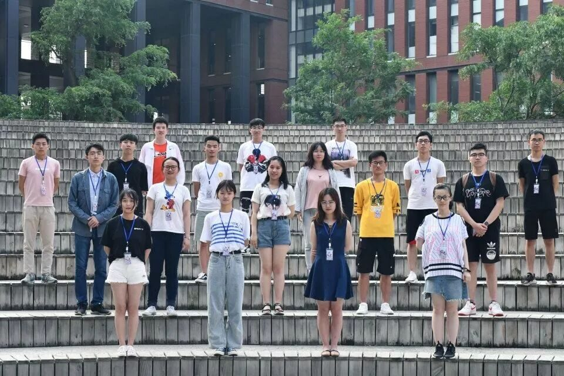
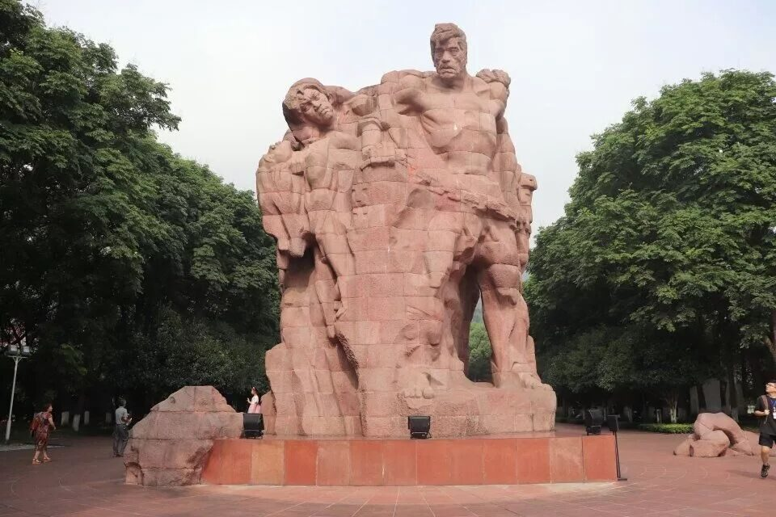
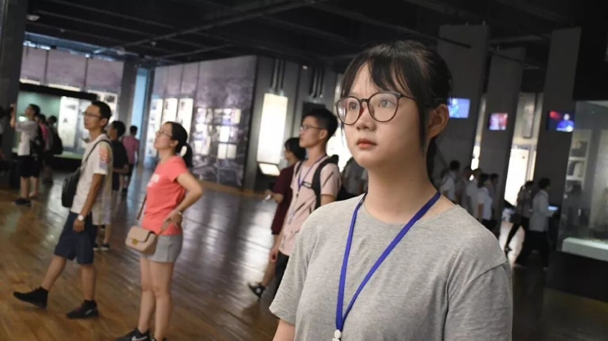
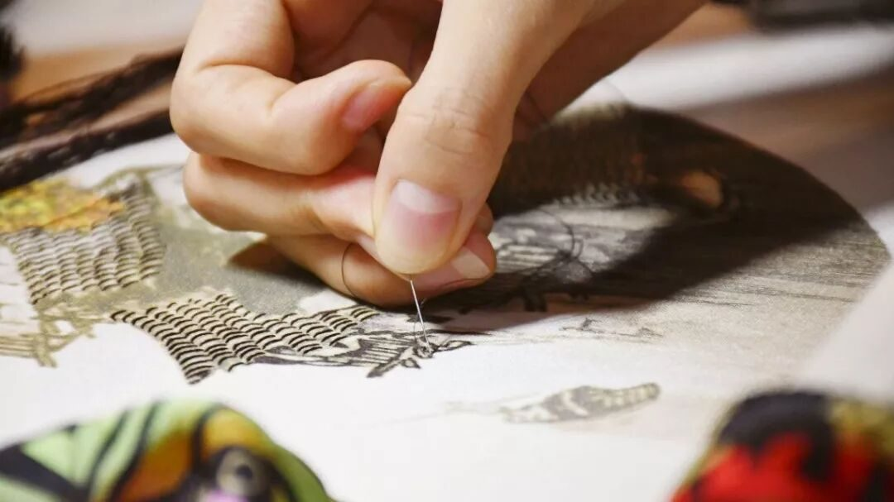
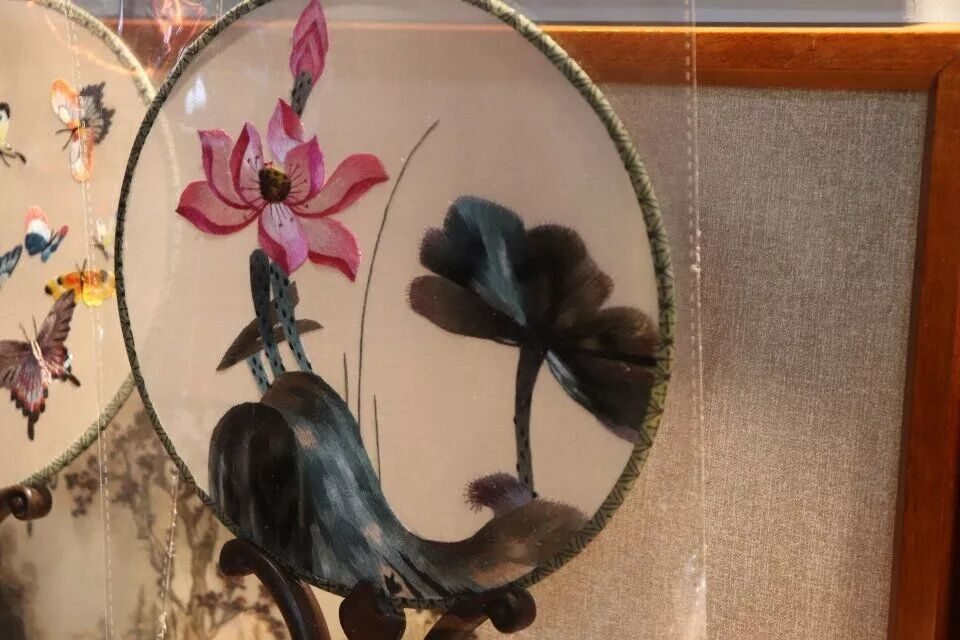
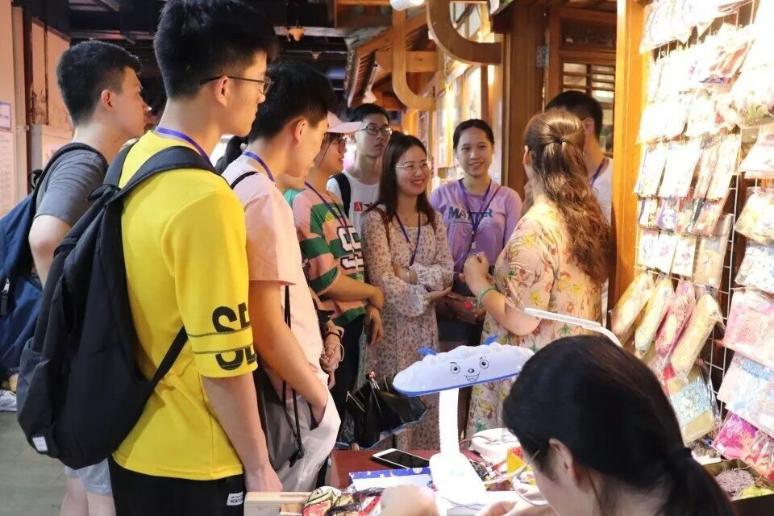
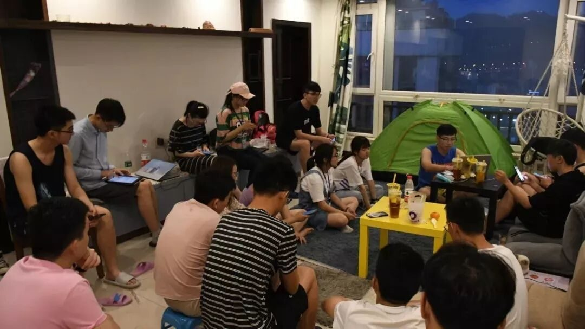

【渝传尺素·五】以诚意叩开山城文化之门

行者
袁欣怡
很早就听说过“行者无疆”这个团队。老行者对我说，“行者无疆”这个团队像家一样，你会有一股情怀留在这里。怀着对文化苦旅的向往，对行者情怀的追思。我坦露诚意想要加入这个大家庭，进行一场关乎渝州的文化之行。重庆这座山城，热情地迎接我们。像爱美的小姑娘一样，穿上各色行装带领我们去认识她。
渝州之旅的启航
一场社会实践的开端，不是从离校的那一天算起，而是启航于投递报名表的那一刻。斟酌着自我介绍的用词与时长，尽力在面试过程中表达自己想要加入团队的诉求，再到收到那封写着
“思者无域，行者无疆！期待和你完成一场文化苦旅。”
邮件的喜悦。前期准备工作越是充分，对于当地的走访调研就越是期待。收集每一个行程地点的资料，讨论着到时候可能会遇到的采访对象和相关采访主题。行者课堂上通过调研组成员的介绍去了解当地的文遗和民俗，看到被囚住的烈士们自制五星红旗的美丽，听闻小萝卜头的可爱与英勇。
真正登上去往重庆北的火车，一次次穿梭山洞的过程中感受鼓胀的耳膜，列车车窗外跨越山谷的大桥，都像是这场文化之旅的脚步声，一步步靠近。
重庆山城，依山而建傍水而居。靠着庞大的轨道交通系统，我们走过了整个行程。我们在长江和嘉陵江之上呼啸而过，在山中甚至居民楼中穿梭。我们诚心前来，想要更深层次地了解这个城市的魅力。
愿以我的血献后土，换得神州永太平

层层叠叠的楼梯，肃穆的陈列馆，黄色灯光下黑白的照片，玻璃橱窗里秀丽的字迹。这一切都在痛诉着11.17那天的残暴，都在歌颂着那些为了新中国的黎明仍然奋斗着的不屈灵魂。
在这里有着一个个惊心动魄的故事，一位位誓死报国的英雄。
家世优渥的刘国鋕放弃了出狱的机会，坦然道“我死了有党，等于没有死！我如果出卖了组织，活着又有什么意义！”我震惊于这个从小养尊处优的公子哥竟然有着这么坚定的革命信仰。他明明可以取得一个自由身，带着家族的资产与人脉走上另一条道路开始崭新的生活。可是一朝入党，则全心为党。即使是牺牲捐躯这种生死大事，也在所不辞。
蓝大胡子的原型蓝蒂裕给儿子取名为耕荒，并寄予了“用变秋天为春天的精神，把祖国的荒沙耕种为美丽的园林。”这一美好期许。而其子作为一名森林火警，退休后也一直在从事园林设计方面的工作，为国奉献。
邓颖超同志曾在重返红岩之时写下“红岩精神永放光芒”的题词。我想他们就是红岩精神的光，成百上千的红岩英雄用鲜血铺出通往黎明的道路，用希望编织出星光，只是将自己永远地留在了漫漫长夜里。我们回顾这段历史，是为了歌颂，是为了纪念，也是为了给自己前行的道路上增添光束，坚定信仰，一往无前。
❖



遇到黄敏老师的时候，老师正坐在小店门口绣一幅名为《重庆印象》的蜀绣。青砖红柱，黑瓦白墙，一针一线下去的，便是三月烟雨。细如丝，多如毛。


我们礼貌地和老师打招呼，知晓方才店里观赏的便是这双巧手刺出的双面绣，更是震惊蜀绣的奇妙与活灵活现。讶异于国家级传承人的平易近人与真实细腻，黄敏老师和我们一起讨论了关于网红文化给蜀绣经济带来的影响，以及“民俗进校园”活动对于小学生们的影响。
“向校园科普可以让一些喜欢的人去学习这方面的东西，可能这些人会成为传承人或是收藏家以后会对蜀绣做出自己的贡献。”
黄敏老师也喜悦地提到，有一个小女孩因为在某次活动上了解到蜀绣，于是虚心前来求教，老师也毫不吝啬地免费教学，只是看着有人想来了解，想来学习便觉得高兴。

回首
有时候缘分可能就是这么奇妙，一场酣畅淋漓的文化之旅使我们相识相知。我们做行者的，在这一刻一起奔赴一个城市，用脚步丈量她的文化，用诚意叩开她的心弦。
我不会遗忘每晚分享会上大家分享着这一天的所见所闻，不会忘却深夜工作中的行者们。两三点的夜里互道一句“晚安，早点睡”，又在新的一天跳入重庆的早高峰奔赴新的战场。在正午的轻轨上昏昏欲睡，又在下午的行程里活力四射。


思者无域，
行者无疆。
我们，
一直在路上。
来源丨行者无疆实践团
文字丨袁欣怡
排版丨陈嘉颖
审核丨邓子孚 段智然
视频丨陈辉
行者无疆实践团
QQ：2758025831

随行者一起认识世界
长按二维码